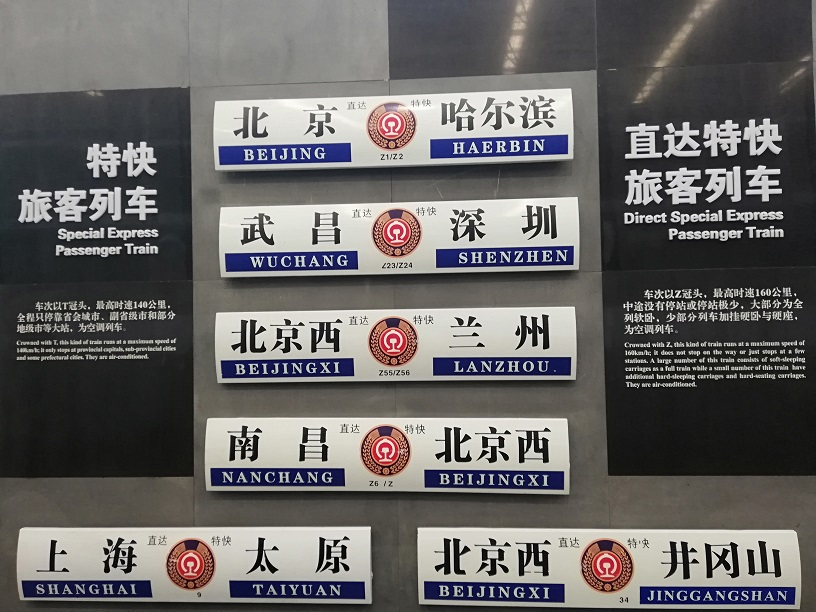

故宫
故宫是一个令人着迷的地方，走在里面会不由自主的感受到她的魅力，让你去了一次还想再去的魅力。 当天天气并不是很好，下着下雨，人们打着伞穿着雨衣挤成一团吵吵嚷嚷的往前走着。 于是我们就离开了大部队的人群，去到了旁边的小地方逛逛。
国庆小长假，我花了四天的时间在北京玩耍。初中毕业的时候，就来北京玩了一趟，当时去了故宫、北京博物馆、长城、天安门等等北京知名的景点。但比较遗憾的是，故宫我没有走完，因为太累了。所以第二次来北京，故宫是我不可不去的地方。
这一次到北京，没有了最初的好奇与对城市知名景点的向往，我们格外悠闲.
古老的火车一列一列的展示在场馆里，从蒸汽头到动车头应有尽有，铁道博物馆的魅力就在这里了。
火车并不向汽车、自行车在生活中那么常见，坐上了火车对于我来说就是远离家的路程开始了，因而火车对于我有一种别样的感觉。 一辆辆火车成列在面前，一排排列车编号整齐的排着，火车拉近了地区与地区之间的距离，也拉近了国家与国家之间的距离。 一趟趟火车承载了多少年轻人的梦想，背上行囊走向远方，也带领众多人领略了不一样的风景。

故宫是一个令人着迷的地方，走在里面会不由自主的感受到她的魅力，让你去了一次还想再去的魅力。 当天天气并不是很好，下着下雨，人们打着伞穿着雨衣挤成一团吵吵嚷嚷的往前走着。 于是我们就离开了大部队的人群，去到了旁边的小地方逛逛。
欢乐谷让一个怂怂的自己挑战了自我。不敢坐过山车的我也被拉着一起坐了过山车，但是跳楼机还是很怂的没有玩。 欢乐谷是放飞自我的一天，虽然每个地方的欢乐谷都差不多，但各个地方还是有各个地方的特点，所以欢乐谷还是很值得一去的。
| 地点 | 游玩时间 | 位置 | 推荐指数 | 额外建议 |
|---|---|---|---|---|
| 北京胡同 | 半小时 | 二、三环 | 三颗星 | 北京小胡同很多，随便找一个逛逛就可以 |
| 铁道博物馆 | 半天 | 六环外 | 四颗星 | 距离较远，没有直达的车和地铁，下了公交之后要走一段路 |
| 故宫 | 半天到一天 | 一环 | 五颗星 | 可以根据自己的喜好逛一逛，有自助讲解可以自行购买 |
| 欢乐谷 | 一天 | 四环 | 五颗星 | 要早一点去，有经济能力的情况下可以买快速票，玩的更多 |